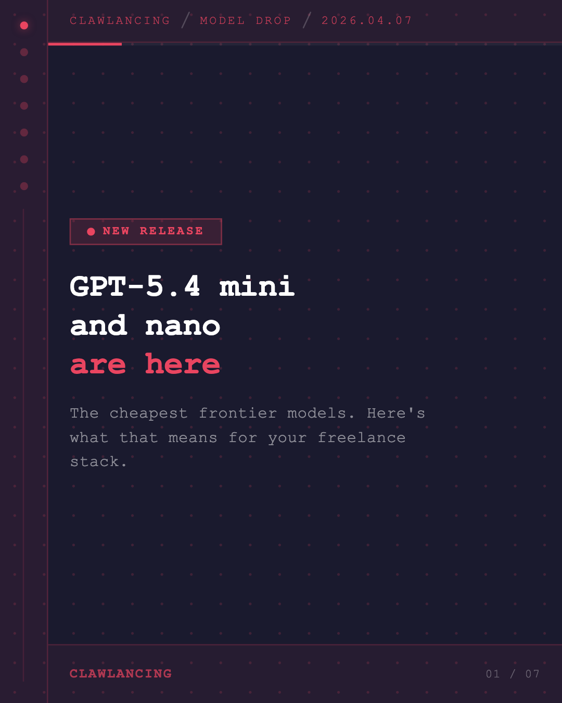
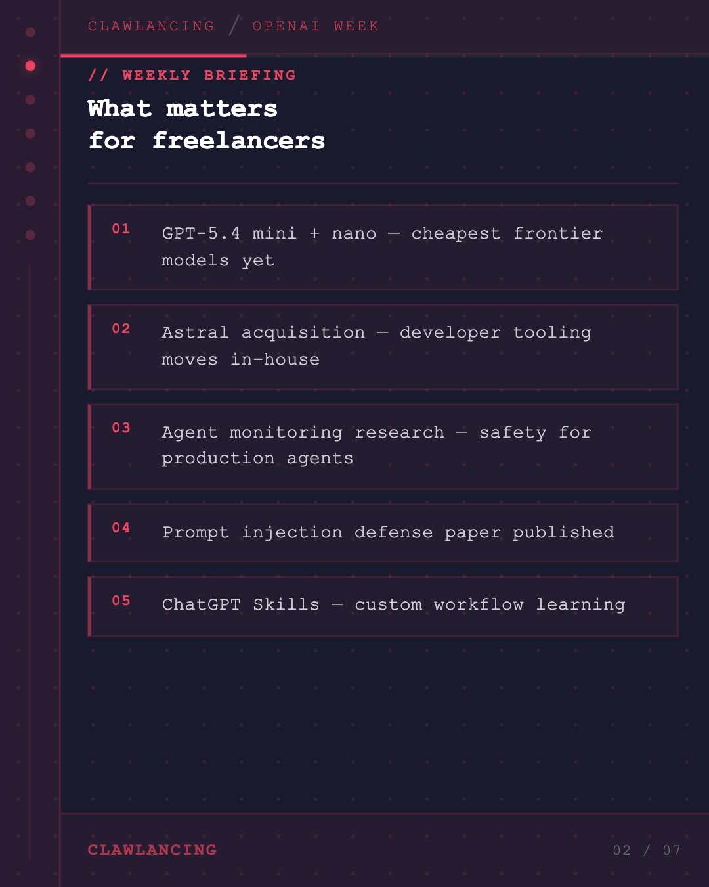
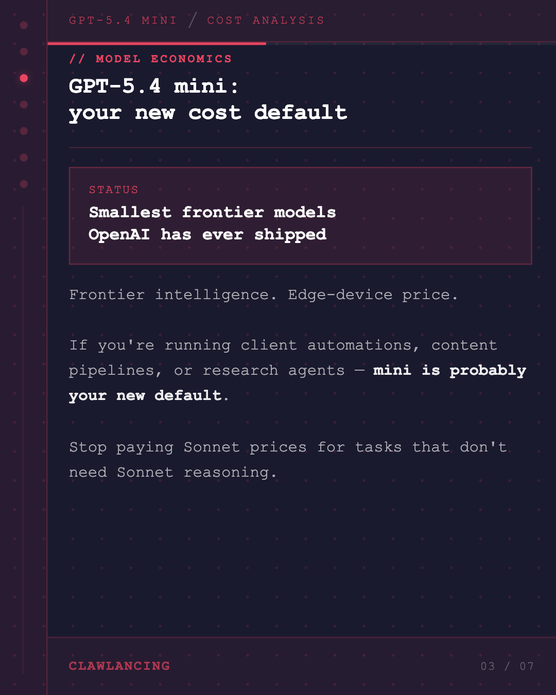
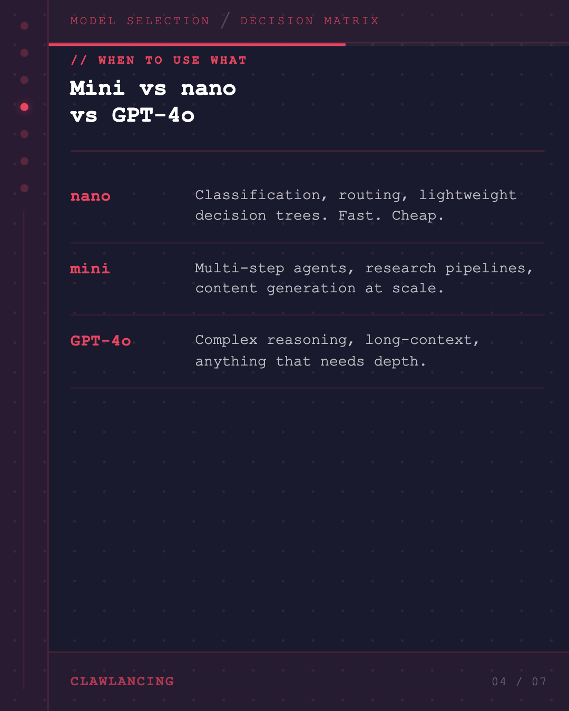
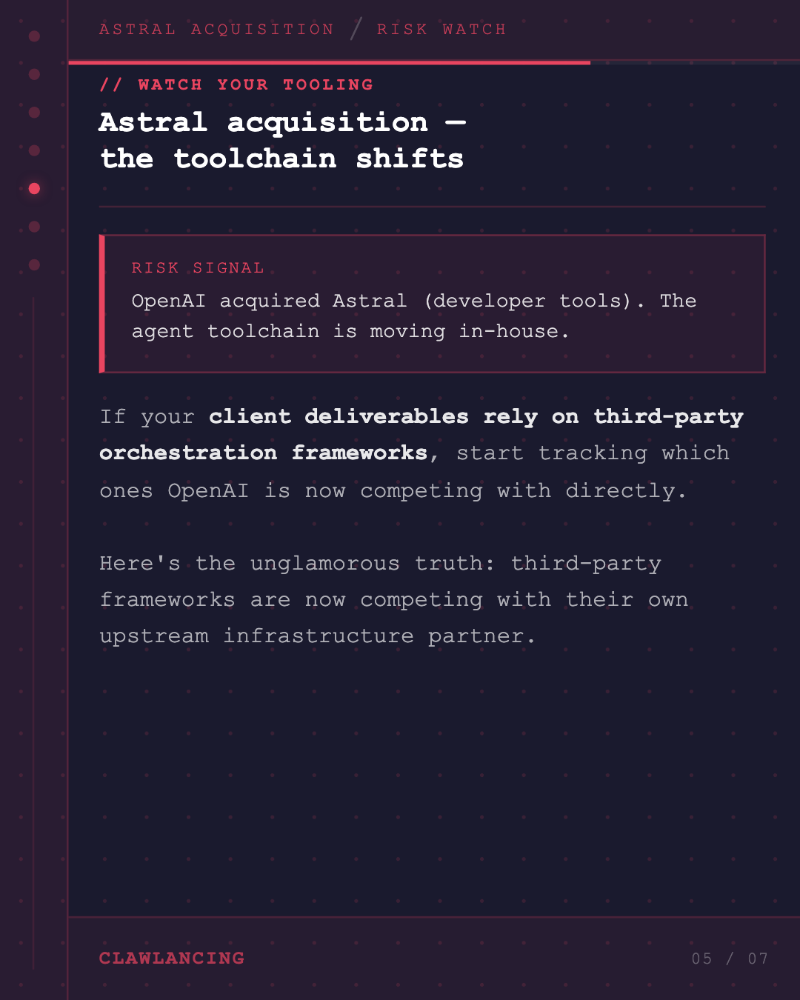
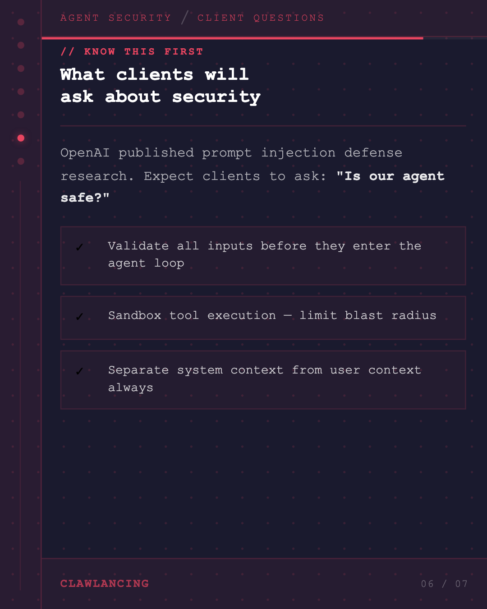
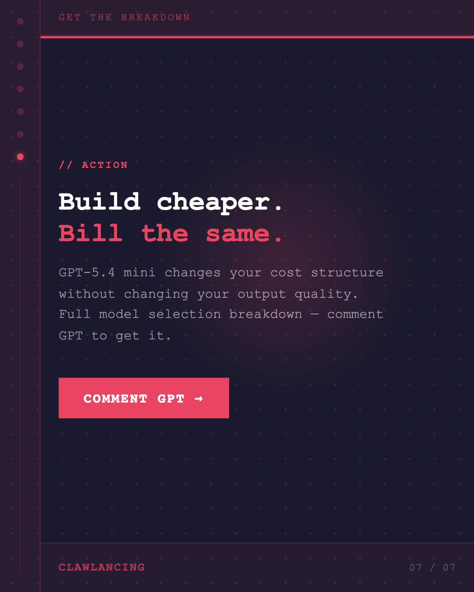

Key Takeaways
01
OpenAI this week — what matters for freelancers — ['GPT-5.4 mini + nano — smallest and cheapest frontier models', 'Astral acquisition — developer tooling moving in-house', 'Agent monitoring research — safety for production agents', 'Prompt injection defense paper published', 'ChatGPT Skills — custom workflow learning']
02
GPT-5.4 mini: your new cost default — Frontier intelligence at edge-device price. If you're running client automations, content pipelines, or research agents
03
Where to use mini vs nano — ['mini — multi-step agent tasks, client automation, research pipelines', 'nano — classification, routing, lightweight decision trees', 'Keep GPT-4o for complex reasoning, long-context tasks']
04
Astral acquisition — watch your tooling — OpenAI bought Astral, a developer tools company. They're building the toolchain in-house. If your client deliverables re
05
Agent security — what clients will ask about — OpenAI published prompt injection defense research. Expect clients to ask: 'Is our agent safe from prompt injection?' Kn
Analysis
GPT-5.4 mini and nano just shipped. Here's what actually matters for AI freelancers.
The cost question: Mini is OpenAI's smallest frontier model — built for edge devices and cost-sensitive pipelines. If you're running multi-step client automations, you've likely been paying GPT-4o prices for tasks that don't need GPT-4o reasoning. That's margin you're leaving on the table.
Practical model selection: — Nano: classification, routing, simple decision logic — Mini: agent pipelines, content generation, research workflows — GPT-4o: complex reasoning, long-context tasks, anything depth-critical
The toolchain signal: OpenAI acquired Astral, a developer tools company. This is the lab moving the agent toolchain in-house. Freelancers building on third-party orchestration frameworks should track which ones are now in direct competition with OpenAI's infrastructure.
The security question: OpenAI published prompt injection defense research this week. Clients are going to start asking if their agents are secure against input hijacking. The freelancers who can build with this in mind — and explain it clearly — will win the retainers.
Build cheaper. Bill the same. That's the opportunity here.
What model are you defaulting to for client pipelines right now?
The cost question: Mini is OpenAI's smallest frontier model — built for edge devices and cost-sensitive pipelines. If you're running multi-step client automations, you've likely been paying GPT-4o prices for tasks that don't need GPT-4o reasoning. That's margin you're leaving on the table.
Practical model selection: — Nano: classification, routing, simple decision logic — Mini: agent pipelines, content generation, research workflows — GPT-4o: complex reasoning, long-context tasks, anything depth-critical
The toolchain signal: OpenAI acquired Astral, a developer tools company. This is the lab moving the agent toolchain in-house. Freelancers building on third-party orchestration frameworks should track which ones are now in direct competition with OpenAI's infrastructure.
The security question: OpenAI published prompt injection defense research this week. Clients are going to start asking if their agents are secure against input hijacking. The freelancers who can build with this in mind — and explain it clearly — will win the retainers.
Build cheaper. Bill the same. That's the opportunity here.
What model are you defaulting to for client pipelines right now?
Visual Breakdown






